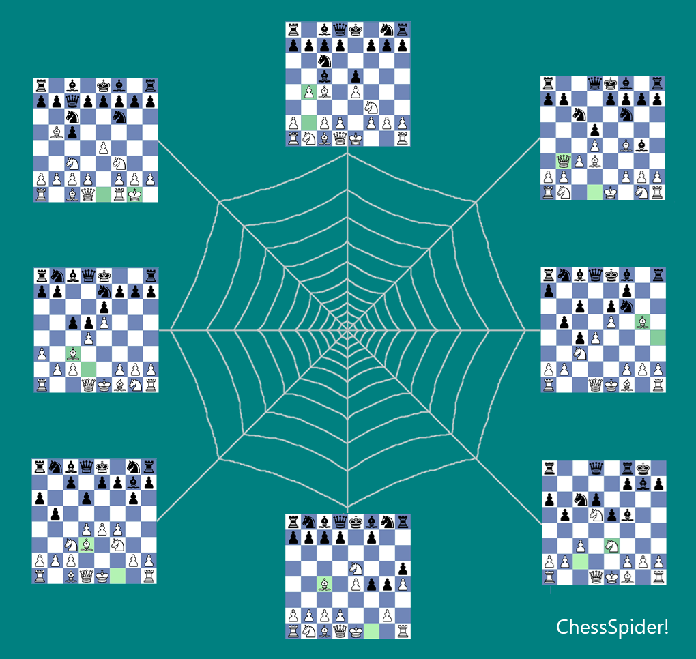

Chess Opening Preparation, Focused on Your Repertoire
Find the games that matter to the openings you actually play.
ChessSpider! connects your personal White and Black repertoires with your PGN collections, so you can find games containing positions from your repertoire and investigate them.
Fully functional. No registration or credit card required.
Unlimited version after the trial. Purchase is optional and there is no automatic charge.

Start With Your Repertoire
Your repertoire defines the positions and variations that matter to your chess. A large PGN collection, on the other hand, may contain thousands of games that are completely irrelevant to you.
ChessSpider! lets you use your repertoire as the starting point: search your PGN collections for games containing your repertoire positions, then examine the games and variations you are interested in.
See ChessSpider! in Action
The Essentials
Build Your Repertoire
Create and maintain your own White and Black repertoires using the positions and variations you choose.
Search Your PGNs
Find games containing positions from your repertoire in your own PGN collections.
Investigate the Results
Open the relevant games, examine variations and use them to research the openings you play.
Chess Coaching with Timothy Mifsud

Timothy Mifsud is a FIDE Candidate Master from Malta, currently rated 2103 Elo, and the developer of ChessSpider!. He has been playing competitive chess since childhood and has represented Malta at numerous international events.
He won the Maltese National Championship six consecutive times, from 1993 to 1998, becoming the youngest-ever Maltese Champion at the age of 14 — a record he still holds. He also won a number of junior and other tournaments, including the British Under-13 Championship in 1991.
Timothy represented Malta at the 1992 Chess Olympiad in Manila, where he was the youngest player in the tournament, and subsequently led the Maltese team at the 1994 Moscow and 1996 Yerevan Olympiads. He reached a peak Elo rating of 2250 in 1997 before taking a long break from competitive chess. He returned to serious play in 2022, and in March 2023 achieved his best performance to date.
During his university years he also organised chess coaching sessions and tournaments. He now offers online chess lessons focused on tactics, calculation, positional understanding and endgames through practical exercises and instructive games. Each lesson is tailored to the student's level and individual needs.
Lessons typically last 90 minutes and are available for children, teenagers and adults — particularly beginners and players rated up to around 2000 Elo. Timothy teaches in both English and Maltese and is happy to discuss what would work best for you.
Frequently Asked Questions
Does ChessSpider! work with PGN files?
Yes. You can open and search valid PGN game collections, including files containing comments and variations.
Can I manage both White and Black repertoires?
Yes. You can maintain separate White and Black repertoires and organise them around the positions and variations you choose.
Does ChessSpider! run on Windows?
Yes. ChessSpider! is a Windows desktop application for opening preparation, repertoire management and PGN searching.
Is there a free trial?
Yes. The fully functional trial lasts 15 days. No registration or credit card is required.
Try ChessSpider! Free for 15 Days
Explore a more focused way to prepare the openings you actually play.
€29.99 for the unlimited version · No subscription
Download ChessSpider!